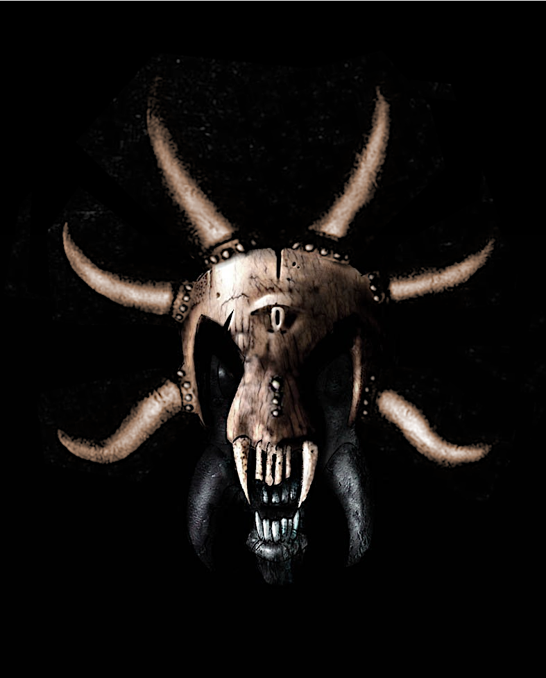

You are thrown into a self-organized penal colony without guards, sealed from the outside world through a magical barrier; a prison full of convicts which only serve one purpose - mining the precious magical ore to fuel the kingdom’s war outside. Experience anarchy: Gangs with different ideologies and brutal force govern the world of the condemned. Your goal is to survive and to escape.
You wake up from months of unconsciousness to walk through the ruins of the prison you tried to escape from - still trapped inside. Dive into a world of refugees, fleeing from a war of prophetic cause. You are on a mission to end war - in four special and unique plots depending on your chosen faction.
You are Thora, the Amazon, trying to pave your way through the war-torn city. Khorinis is in decay: Explore the different quarters under control of opposing groups, the poverty of the slums and the legendary, now abandoned ore factories. Amid the consequences of the Nemesis before, you are in search of peace, but hunted by your past.
PHOENIX (also known under its working title Project Nyx) is an oldschool story-driven 3D action-rpg with a radical immersive design.
Based on and conceived as a genuine reboot of GOTHIC (2001), PHOENIX is inspired by the vision as it was presented from 1998 to 2000 by the four founders of Piranha Bytes and promoted extensively by Tom Putzki (see our Gothic Archive).
PHOENIX is not an attempt to reconstruct one specific alpha version of one specific time or to shape the game according to the ideas of one specific founder. They had contradictory ideas, shaping the final product into a fragment of what was presented to us as its vision and culminating in a conflict about a worthy successor, that led to the cancellation of the first, forgotten Gothic Sequel.
What we attempt to achieve is to unite the different ideas from all periods of development. We want to realize this diverse dream, as we imagined the game to be, by the words written and images shown to us before release and turn that into one harmonious and coherent whole. And we want to go beyond in that we try to max out the radical potential of GOTHIC, as we dream beyond industrial constraints.
Thus, for us, PHOENIX is what GOTHIC should have been.
PHOENIX is not an official game of the GOTHIC franchise, it's a non-commercial project by a small indie team and a pure labour of love. We just try to realize the contradictory ideas of the four founders, bring to an end what they couldn't. And maybe thereby help, at least a bit, to heal the old wounds of their clash of dreams.
PHOENIX is designed as one coherent drama in three independent acts.
Orpheus (Alpha) + Nemesis (Sequel) + Elysion (Khorinis)
We need your help to realize this dream. You can contribute to our project, donate or support us by promoting our ideas.

PHOENIX aka Project Nyx is based on four design principles: